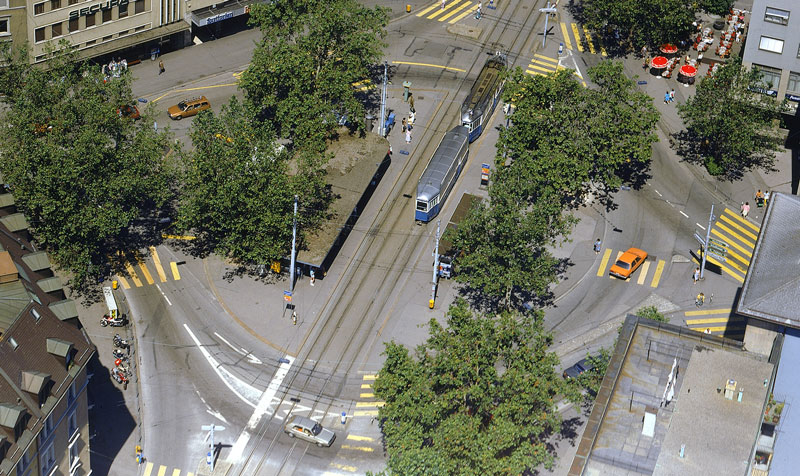
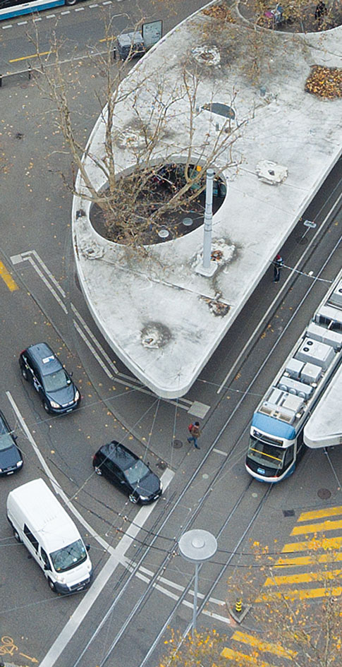
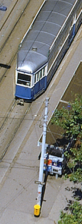
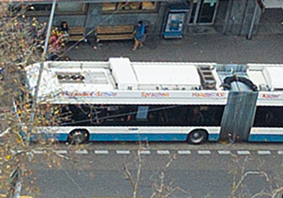
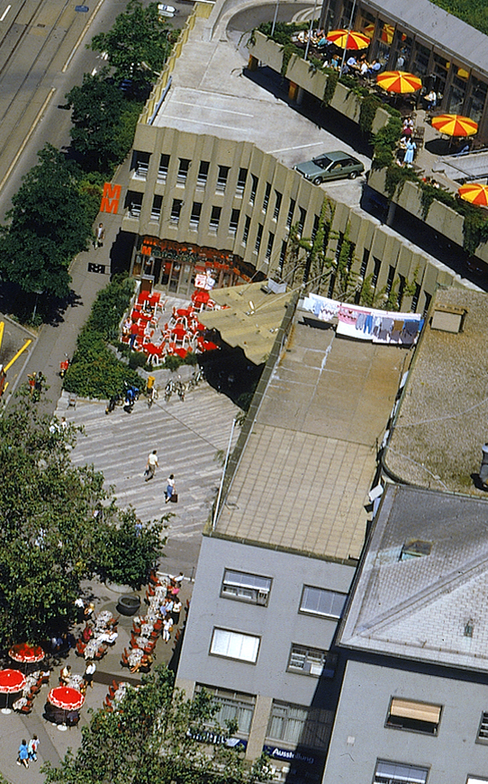
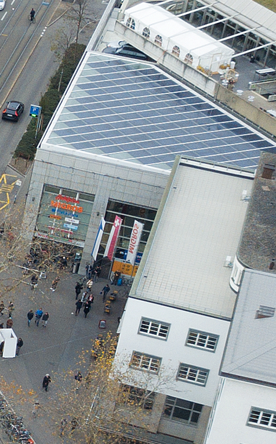

Der Limmatplatz ist ein wichtiger Knotenpunkt, der die Limmatstrasse, das Ende der
Langstrasse
sowie der Beginn der Kornhausbrücke verbindet. Die Grundzüge bestehen aus einem Quadrat, dass 45°
verschoben zu den rechtwinklig kreuzenden Strassen angelegt wurde.

Um 1900 errichtet Arnold Bürkli den Limmatplatz. Der Platz wird umgebaut und im Mai 2007 in Betrieb
genommen. Es gibt ein offeneres Platzkonzept mit zwei unabhängigen halbrunden Betondächern die
durchbrochen sind, sodass mehr Licht einfällt und so platz für Platanen bietet.
Früher existierte nur ein kleines Kioskhäusschen mit integrierten Toiletten und einem einfachen
Unterstand. Die Haltestelle wirkte eher wie ein kleiner Durchgangsbahnhof und war ein Treffpunkt
nicht nur für Trampassagiere, sondern auch für die Drogenszene. In den heutigen Stützkörpern sind
die Zusatznutzungen wie Kiosk, Café-Bar, Toilettenanlagen und diverse Automatenstellen
untergebracht.

Haltestellen der Tramlinien 4, 13, 17 und der Trolleybus 32 von der Langstrasse in Richtung
Kornhausbrücke, fahren seit 1970 auf den Strassen Zürich’s. Nach einer Quelle von 2009 verkehren
täglich durchschnittlich 28000 Fahrgäste des öffentlichen Verkehrs über diese Haltestelle.

Die öffentlichen Verkehrsmittel wie der 32 Bus oder die Trams wurden in dieser Zeitspanne ersetzt.
Auch die Autos haben sich verändert. Sie wurden dunkler – ja fast alle sind heute schwarz und wie
erwartet, sind es einige mehr. Etwas mehr Beständigkeit hat der Zebrastreifen, der noch fast überall
an den gleichen Stellen angeordnet ist.
«Gerade wo sich unser Alltag abspielt, sehen wir am flüchtigsten hin. Wir achten nicht auf die
Modellierung, die plastische Form der gewöhnlichen Häuser.»
Andrea Helbling, Zitat aus Vertreter der Gattung Haus


Das dominierende Gebäude am Limmatplatz ist das mehrstöckige Hochhaus und Hauptgebäude des
Migros-Genossenschafts-Bunds. Dies befindet sich zwar immer noch am gleichen Standort. Von der
1987 abgebildeten Dachterasse sowie dem Parkplatz, ist heute jedoch nur noch ein Solardach übrig.
Auch gab es einen Wechsel des Besitzers des bekanntesten Cafes am Limmatplatz. El Greco wird zu Cafe
Lang: 2010 verkündet Migros als Hausbesitzer, dass die Zeit als Gaststätte abgelaufen ist und die
Räumlichkeiten werden von einem jungem Quartett übernommen.